Simple connectivity
The easy partAn API or MCP endpoint that lets an agent reach your systems
Empower agents. Keep control.
AI agents are becoming a new interface to the world. Raily connects your existing data and knowledge to the growing ecosystem of external AI agents -through a governed layer that preserves your control over how information is accessed and used.
“What does your latest research say about the European market?”
“Our latest European market outlook identifies three significant shifts...”
They ask. The agent searches. Your organization has the answer -but the connection is missing.

People still come directly. Increasingly, personal AI and autonomous agents arrive on their behalf.
More agents, more channels and faster interactions put pressure on the old, narrow interfaces.
Raily helps organizations handle new interaction types while connecting agents to governed, relevant data.
Connecting an agent is only the visible part. Underneath are the challenges that determine whether AI access is actually useful, reliable and safe.
An API or MCP endpoint that lets an agent reach your systems
Fragmented sources · quality · consistency
Meaning · relationships · business semantics
Identity · permissions · provenance · audit
Raily connects your existing data to the external AI ecosystem. It transforms fragmented information into coherent context that AI agents can access and use -while your organization retains control over access, permissions and usage.
Connect to the systems, repositories and platforms where your organizational information already lives.
Build coherent context that helps AI agents understand your information, its meaning and the relationships within it.
Expose information through governed interfaces for external AI agents, with control over identity, permissions and usage.
Make your data reachable by AI. Empower agents. Keep control.
Raily provides a controlled way to make your information available wherever your customers, partners and audiences use AI.
Let your customers' AI agents access your information, products and services -creating new ways to interact with your business.
Enable partners and business ecosystems to work with your data and knowledge through their own AI systems.
Make approved content and knowledge accessible through AI platforms such as ChatGPT and Claude, while maintaining control over access and usage.
Haaretz made its archive of 180,000 articles accessible to AI applications in under two hours of customer engineering time. Raily connected the existing content management and authentication systems, enabling AI applications to access the archive while preserving subscription entitlements and editorial control.
Websites transformed how people interact with organizations. AI agents are creating the next shift.
Tomorrow, customers won't just visit your website or use your app. Their agents will interact with your organization on their behalf -discovering information, accessing services and getting things done.
Raily makes your organization reachable by AI.
Make your data reachable by AI. Empower agents. Keep control.